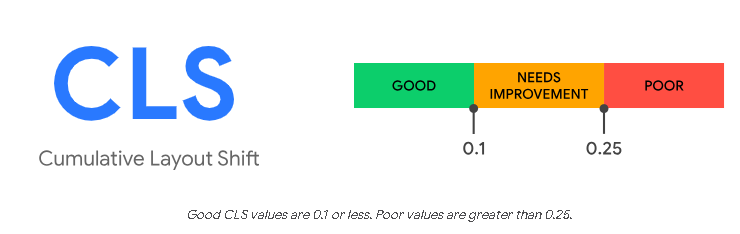

SCENE 2: Core Web Vitals kya hai ? ⚡
- Core Web Vitals, Google ke dwara banaye gaye 3 important score hain.
- Inse Google check karta hai ki kisi website ka user experience real me kaisa hai.
- Ye direct Google ranking ka factor bhi hain. Matlab agar teri site ke score acche honge to Google par teri website upar rank karegi.
Ye 3 cheezon par based hote hain:
- Loading Speed :
LCP - Largest Contentful Paint - Responsiveness :
INP - Interaction to Next Paint - Visual Stability :
CLS - Cumulative Layout Shift
Core Web Vitals ke 3 main measurement:
-
1. LCP - Largest Contentful Paint
- Sabse bada content kitne time me load hota hai. Jaise image, bada heading ya video.
- Target: 2.5 sec ke andar load ho jana chahiye

-
2. INP - Interaction to Next Paint
- Jab tu button ya link par click kare, to kitni jaldi response aata hai.
- Target: 200ms ke andar response aa jana accha hota hai

-
3. CLS - Cumulative Layout Shift
Problem: Achanak layout me hone wale changes, user experience ko kaafi kharab kar sakte hain.
Jaise, text achanak move ho jaye to padhte time user ko samajh nahi aata ki wo kahan tha.
Galat link ya button par click ho jane se bhi nuksaan ho sakta hai.- CLS, kisi bhi page ke poore lifecycle ke dauraan, achanak hone wale har unwanted layout shift ka score calculate karti hai.
- Jab bhi koi dikhne wala element, ek frame se dusre frame me apni position change karta hai, tab layout shift hota hai.
